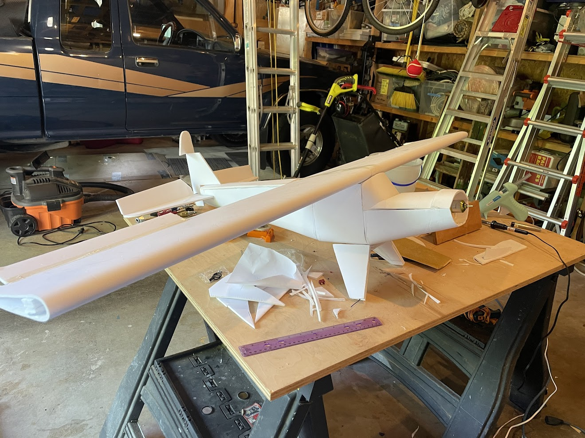
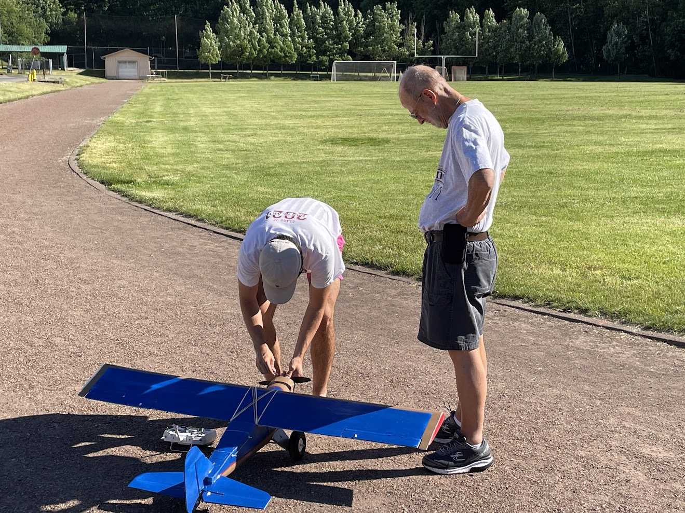
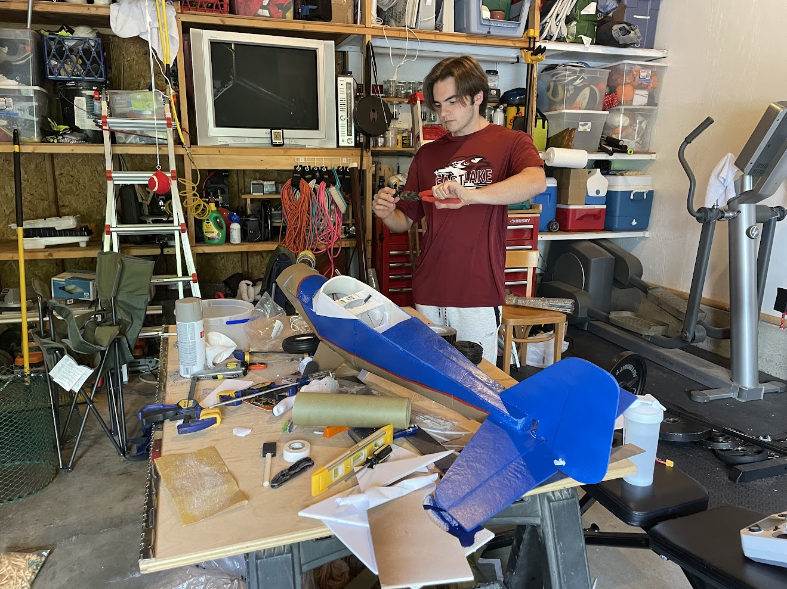
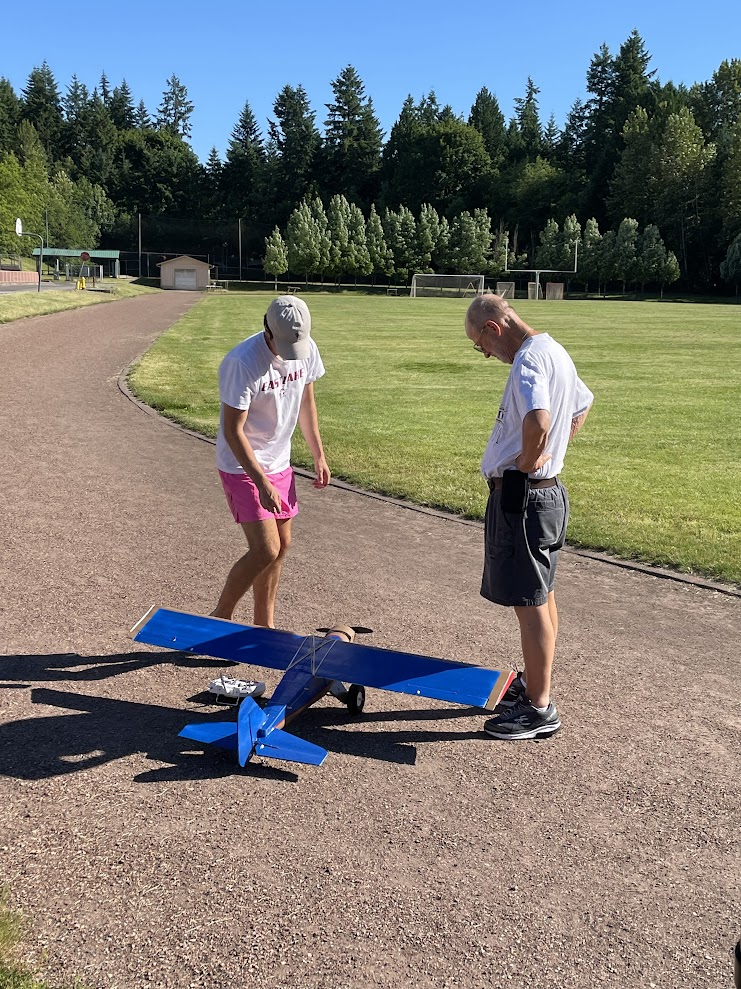

Before I moved to Iowa to study aerospace engineering, I decided to build a radio controlled short take off and landing airplane out of cheap materials such as foamboard, gorilla glue, and wooden dowels. For the wing, I made a simple airfoil by folfding a sheet of foamboard in half and adding 2 foam spars of different heights to develop the airfoil shape. I addeed a wooden dowel for structural support along the entire span of the wing.

To form the body I made three different sections and formed them into a U shape. I then added foam for the top of the body and canopy, as well as cross sectional supports on the interior. As for the horizontal and vertical stabilizers, each was made out of a solid sheet of foam with a small added dowel for structural support. These were both glued into slots cut into the rear end of the fuselage.

The airplane was controlled by 4 simple 9 gram servos, two embedded into the wing and two in the center of the fuselage. Pushrods were run through the body to connect the servos to the control horns on the elevator and rudder. to ensure minimal transverse deflection in the pushrods they were run through small holes in foam supports placed along the inside of the fuselage. The servos were connected to a simple 4 channel reciever along with a dc motor to provide thrust.

After all the electronics were secured and the weight, balance, and control surface actuation was checked, a red and blue paint scheme was added and it was time for a test flight. On the first flight it was apparent that the airplane achieved the goal of short take of and landings due to its large wingspan and area. The airplane also turned out very light due to its construction with lightweight foamboard which when paired with the large 14 inch propeller allowed for a high thrust to weight ratio further enabeling its STOL characteristics. The lightweight construction also allowed for a slow cruise speed estimated around 5-7 m/s. While the airplane did not feature a flight controller, the design had a high natural stability and did not require active stabilization.